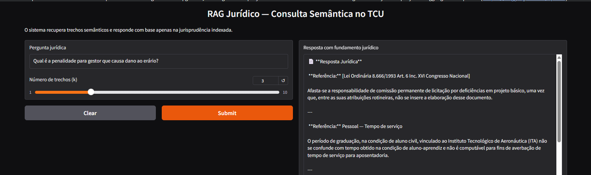
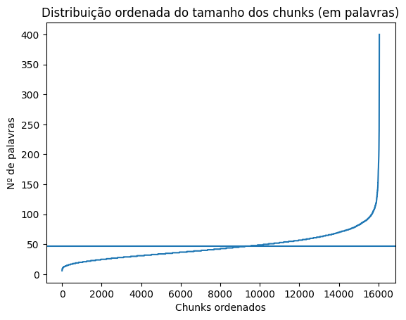
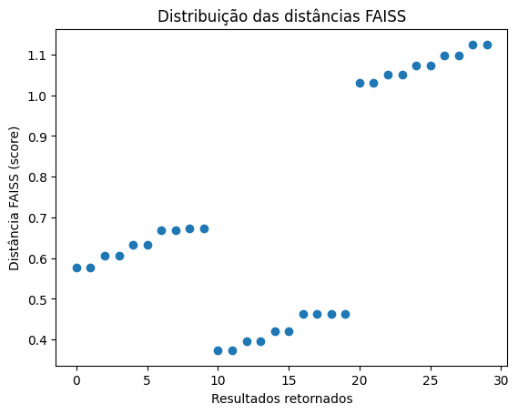

1. O Problema da Recuperação Jurídica
A análise manual de jurisprudência é morosa e sujeita a erros. Sistemas de busca por palavra-chave falham em captar o contexto semântico de teses jurídicas. Este projeto utiliza IA para permitir que advogados façam perguntas complexas e recebam respostas fundamentadas com citações diretas da base de dados.
2. Stack Tecnológica
3. Fluxo de Processamento (Pipeline)
O pipeline foi estruturado para garantir a integridade da informação:
- Ingestão: PDF/Text parsing com limpeza de caracteres especiais jurídicos.
- Chunking: Divisão recursiva de texto para manter a coesão de parágrafos e artigos de lei.
- Vetoriação: Transformação do conhecimento em coordenadas matemáticas (espaço vetorial).
- Retrieval: Busca das top-k passagens mais relevantes para a dúvida do usuário.
4. Resultados e Performance do Sistema
A eficácia da arquitetura foi validada através da análise de recuperação semântica sobre acórdãos do TCU. O sistema demonstrou uma capacidade superior de identificar passagens relevantes, mantendo a fidelidade documental e reduzindo o tempo de triagem de processos complexos.

Figura 1: Interface funcional do sistema demonstrando uma consulta sobre penalidades para gestores públicos com referências diretas à Lei 8.666/1993.

Figura 2: Análise da distribuição de chunks (palavras) para garantir que o contexto jurídico não seja fragmentado.

Figura 3: Scores de distância vetorial (FAISS) indicando a precisão na similaridade entre a pergunta e os trechos retornados.